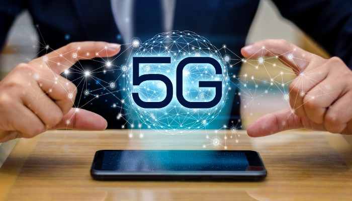
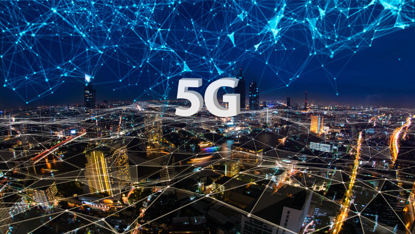

O que a nova tecnologia móvel trará para a humanidade
O 5G é a evolução natural das gerações anteriores de telefonia celular,
sendo a 5ª geração, daí o nome 5G, e traz como diferencial não apenas mais
velocidade de conexão à internet no celular e menor tempo de latência, mas
também outras aplicações que poderão revolucionar a sociedade, como objetos
inteligentes conectados, internet das coisas, automóveis autônomos e cidades inteligentes.
Benefícios
A tecnologia 5G trará ainda mais velocidades para downloads e uploads, cobertura mais ampla e
conexões mais estáveis. De acordo com especialistas, o 5G permitirá que mais de 1 milhão de
aparelhos se conectem por metro quadrado. A proposta é tornar tudo conectado, como celulares,
carros, geladeira, máquinas de lavar e câmeras de segurança, entre outros eletrônicos, intensificando
os produtos de internet das coisas.
Um dos aspectos que geram maior curiosidade sobre essa tecnologia é também uma das suas maiores vantagens.
A velocidade do 5G pode variar entre 1 e 10 Gbps. Em comparação com o 4G, significa que é 100 vezes mais rápida.

5G móvel
A alta velocidade e a economia são os grandes benefícios dessa tecnologia, principalmente para as indústrias.
Com ela, as empresas passarão a ter uma comunicação muito mais integrada em toda a sua cadeia de produção.
A latência, ou seja, o tempo desde que damos uma ordem para o nosso aparelho até que a ação seja cumprida,
também será muito menor. Dessa forma, as atividades serão executadas em tempo real, permitindo grandes avanços
para a medicina, como por exemplo, com a quinta geração de rede, um médico vai ser capaz de operar um paciente de forma remota e com total precisão.
Usos
A direção autônoma de carros terá um aproveitamento imenso com o 5G, para um carro poder se mover de forma 100% autônoma,
ele provém de alguns sensores de alta tecnologia trabalhando juntos gerando milhares de informações por segundo, e tudo
isso é computado pelo carro tendo machine learning operando o tempo todo em background. Com o 5G, os carros na rua poderão
se comunicar com os outros carros em tempo real e transmitir essas milhares de informações uns com os outros para tornar o
trânsito mais seguro, além disso, pode mandar para a fabricante todos os dados para aprimorar ainda mais o machine learning
do sistema autônomo. A segurança em caso de acidente também aumentará, o carro pode mandar todos os dados e até imagens do
carro para serviços de ajuda poderem ir o quanto antes ao acidente, em exemplo em acidentes remotos com possível inconsciência dos ocupantes.
Exemplo de carro semi-autônomo - Tesla Model S
A nuvem também se beneficiará do 5G, com o crescente uso de IA e IoT, mais dados relacionados com os mais diversos dispositivos
inteligentes serão enviados a grandes data centers para serem tratados. A indústria 4.0 se beneficiará totalmente do 5G, com todos
os sistemas na indústria sendo inteligentes, eles se comunicarão o tempo todo e os processos de linha, monitoração, calibragem de
equipamento e tendencia a erros ou produção serão muito mais precisos e monitorados remotamente. As casas também se beneficiarão,
com cada vez mais itens inteligentes dentro delas, você poderá controlar tudo e se comunicar com todos eles com mais precisão e rapidez,
uma câmera de segurança, um equipamento que falhou, um sensor que disparou, tudo isso você receberá no seu smartphone numa velocidade e qualidade incríveis.

Tecnologia 5G
Conclusão
O 5G chegou para revolucionar o mundo como conhecemos, o que hoje vemos tantas coisas inteligentes sendo conectados e interagidas pelo
smartphone, no futuro tudo isso será intensificado para nós usuários. As indústrias irão alcançar o posto de indústria 4.0, as aplicações
com machine learning se intensificarão, o tráfego de dados em nuvem aumentará e você não precisará mais de tanto poder na palma de suas
mãos, as cidades vão se tornar inteligentes com cada mais aparelhos conectados e o início dos carros autônomos começará. A medicina se
proverá do 5G para análise de dados em nuvem, e isso será apenas o começo, pois a 6ª geração já está sendo testada com grandes chances
de ser implementada em 10 para 15 anos, tendo ainda menos latência, mais velocidade e maior alcance. O 5G como muitos ouvem falar, não
ficará restrito apenas a acessar sites mais rápidos pelo celular, por trás ocorrerá o começo de uma evolução gigantesca, capaz de mudar
nossas vidas completamente.